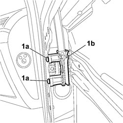

7005D31 FRONT SIDE DOOR DESCENDING GLASS DOOR INNER GUIDE CHANNEL - R R WITH GLASS TAKEN OFF
- Path
- Procedures > 70 FITTINGS > 7005 PASSENGER COMPARTMENT FRONT SIDE DOORS > 7005D FRONT DOOR WINDOW GLASSES > 7005D31 FRONT SIDE DOOR DESCENDING GLASS DOOR INNER GUIDE CHANNEL - R R WITH GLASS TAKEN OFF
- Kind
- repair procedure (removal / refitting; the operation number is the code)
- Applies to
- all engines; all production periods
- Interactive page
- https://sloeber94.github.io/elrnDB-fCrm/en/#/194000861
Applies to: all engines; all production periods
 Removing
Removing
 Refitting
Refitting1. Undo the fixing bolts (1a) and remove the lowering window channel (1b) from the door frame.

Applies to: all engines; all production periods
Refitting
Removing- Check that the lowering window channel is not damaged.
- Position the channel on the door frame and tighten the fixing bolts.